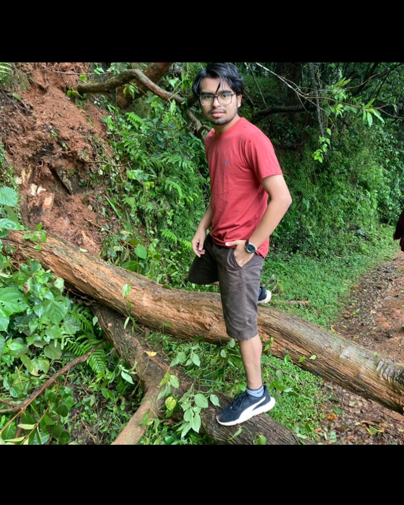

Shashwath Gadad

Education
National Institute of Technology Karnataka, Surathkal 2020-2024
BTech Mining Engineering (Major) CGPA-8.37
National Institute of Technology Karnataka, Surathkal 2020-2024
BTech Electronics and Communication Engineering (Minor) CGPA-7.25
Expert Pre-University College 2017-2019
Class XII 91.33
Jawahar Navodaya Vidyalaya, Haveri
Class X 93.1
Relevant Coursework
- Data Structures
- Database management
- Machine Learning
- Web Development
Technical Skills
- Languages: C, C++, Python
- Developer Tools: VS code, Google colab, Spyder
- Technologies/Frameworks: Github, Worldpress
Projects
Pro-LTV:Projecting Customer Lifetime Value Python, Spyder December 2022
- Created CLV models for intelligent marketing, including forecasting and repurchase likelihood.
- Deployed CLV models for customer loyalty analysis, retention solutions, and value ranking.
- Applied statistical distribution functions, Python, feature engineering, and third-party data for CLV modeling.
- Implemented Xgboost and Lightgbm algorithms to enhance insights, optimizing marketing strategies and promotions.
- Utilized CLV predictions to optimize marketing, target customers, and boost business performance.
Algorithmic Trading Python, Google Colab April 2022
- Designed and executed algorithmic trading strategies incorporating SVM, KNN, and Logistic Regression models.
- Conducted comprehensive data preprocessing and feature selection to enhance model performance.
- Demonstrated strategy effectiveness through backtesting and validation on historical market data.
- Utilized Python programming language and financial libraries to implement and fine-tune trading algorithms.
Image Captioning Python, Google Colab November 2022
- Developed image classification model using Flickr8k dataset, leveraging CNNs for feature extraction and fine-tuning.
- Optimized hyperparameters with employing data augmentation for improved accuracy.
- Achieved commendable results, demonstrating expertise in model evaluation and handling challenges like overfitting.
- BLEU Score is used as a metric to evaluate the performance of the trained model.
Work Experience
Institution of Engineers, NITK Chapter
Gadget SIG Executive Member
- Led a 41-member team and organised knowledge exchange program, workshops and summer mentorship program.
- Responsible for promoting the club within the college and recruiting junior executive members for the club.
- Coordinated events for over 150+ participants as a part of Enigma, flagship event of odd semester.
Tech fest - Engineer
Marketing Team
- Played an integral role in driving successful marketing campaigns, boosting attendee engagement, and forging strategic
partnerships for the tech fest.
- Collaborated with cross-functional teams to ensure cohesive messaging and executed strategies that elevated the event’s
offline presence.
Awards and Certificates
- 2nd in National Level Abacus Competition
- 2nd in Hackaton
Others